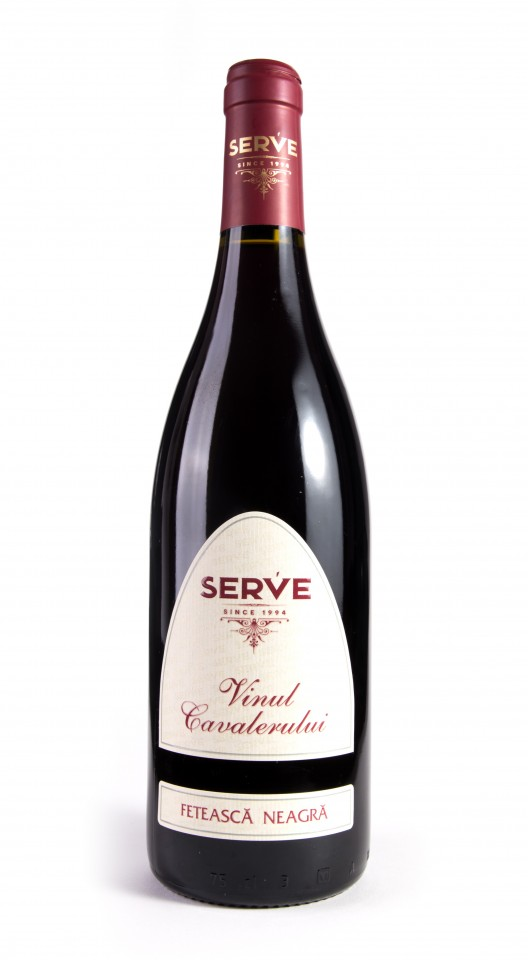
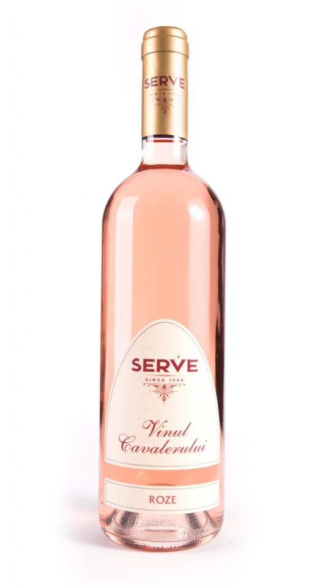
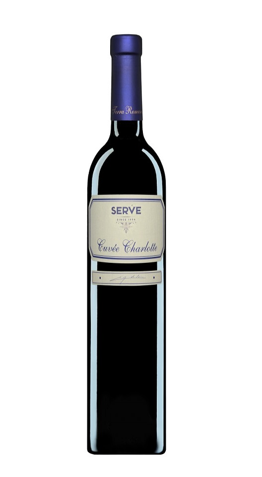
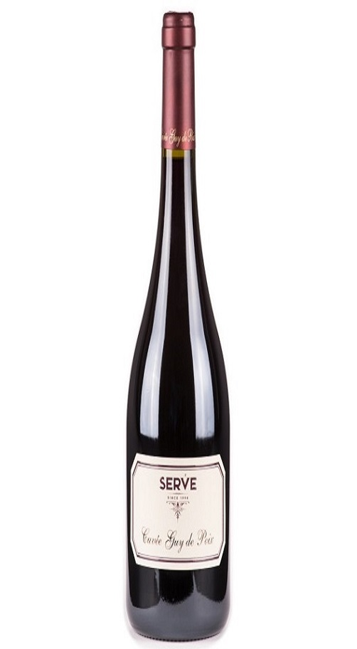

S.E.R.V.E.
6 rânduri pentru o poveste de peste 20 de ani…
O descriere de 6 rânduri în “ World Athlas of Wine”, lucrarea lui Hugh Johnson, a fost de ajuns pentru a trezi interesul
față de terroir-ul românesc, contelui francez Guy TYREL de POIX, stomatolog de meserie și pasionat de vinuri prin genealogie
și înclinație. Intuind potentialul calitativ al regiunilor viticole românesti, el lasă în urmă 600 de ani de experiență de familie
în viticultură și un domeniu (Domaine Peraldi) pe care îl gestiona în Corsica și soseşte în România, în anul 1993, la Ceptura, Dealu
Mare. Feteasca Neagră de Dealu Mare, făcută de un tânar oenolog (Aurel ROTǍRESCU), l-a vrăjit pe Guy și de aici s-a născut…povestea.
Astfel, în 1994 ia naștere S.E.R.V.E. (Societatea Euro Româna de Vinuri de Excepție), prima și pentru câţiva ani, singura societate
privată din sectorul viticol românesc. Marele debut s-a petrecut tot în 1994, atunci când prima sticlă din gama “Vinul Cavalerului”iese
pe piață și devine un succes într-un timp foarte scurt. Între timp, gama de vinuri s-a diversificat, S.E.R.V.E. lansând pe piaţă gama de
asamblaje Milenium roşu şi alb (în 1999 şi 2001), şi primul vin Cuvée – Cuvée Charlotte (în 2001, cu vinul din recolta 1999). În 2005 a
urmat marca “Terra Romana”, alcătuită din vinuri atent selecţionate, destinate celor mai rafinate gusturi şi distribuită exclusiv în HoReCa
şi pe pieţele externe. Cuvée Guy de POIX este ultimul grand vin lansat de S.E.R.V.E., în 2014, cu ocazia aniversării a 20 de ani de activitate,
un vin-omagiu adus celui care și-a legat destinul de Feteasca Neagră și care, din păcate, a dispărut dintre noi în anul 2011 – Contele Guy TYREL
de POIX.
Podgoria DEALU MARE – “Bordeaux-ul” românesc
Podgoria Dealu Mare, situată la nivelul paralelei de 45°, la fel ca și regiunile Bordeaux și Toscana, este considerată “ Patria Vinurilor Roșii”,
unul dintre terroir-urile de referinţă ale României. Podgoria Dealul Mare se încadrează în zona dealurilor Subcarpaților Meridionali, cuprinzând
colinele și depresiunile situate între râul Teleajen la vest și râul Buzau la est. Întinsă pe o suprafață de aproape 14.500 de hectare, “Patria
Vinurilor Roșii” are o istorie și o tradiție viticolă bogate, de peste 2000 de ani. Microclimatul din Dealu Mare, similar celui mediteranean, oferă
viței de vie condiții deosebite de dezvoltare, în special pentru soiurile destinate vinurilor roșii: mai multe zile însorite (în medie, cu 14 zile în
plus față de restul țării), ploi moderate și pământ roditor. Fetească Neagră, Merlot, Cabernet Sauvignon și Pinot Noir sunt câteva dintre soiurile care
se exprimă cel mai interesant și complex în această zonă, dar şi soiurile albe sunt bine reprezentate aici, prin Chardonnay, Sauvignon Blanc, Fetească
Albă și Riesling. Dealu Mare – Ceptura este și casa noastră. Aici, de peste 20 de ani, lăsăm natura să se exprime prin vinurile noastre.
Vinuri:
- 
Vinul cavalerului
- 
Terra Romana
- 
Cuvee
- 
Corse